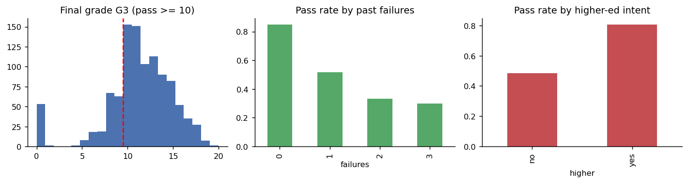
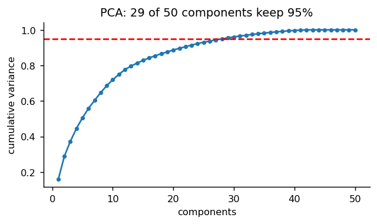
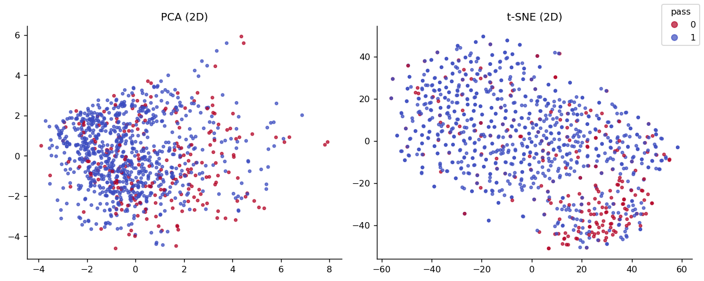
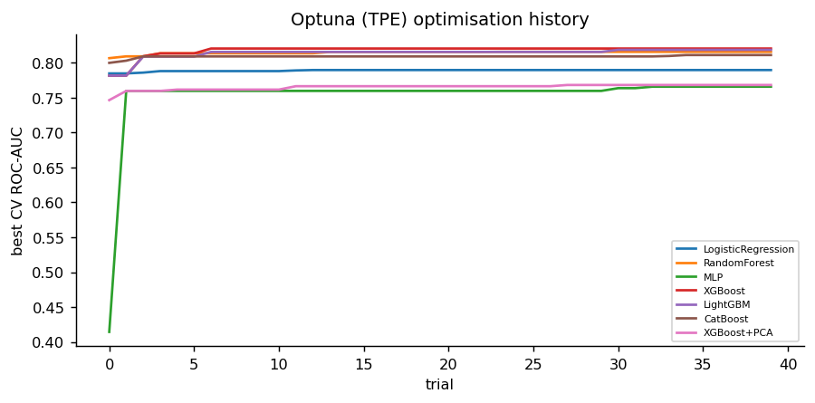
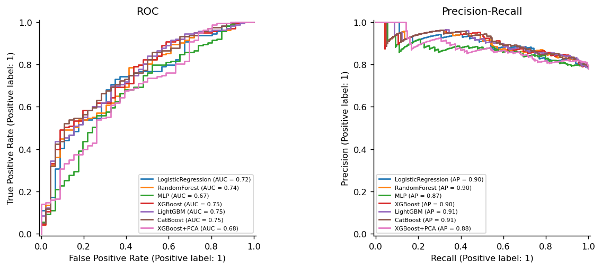
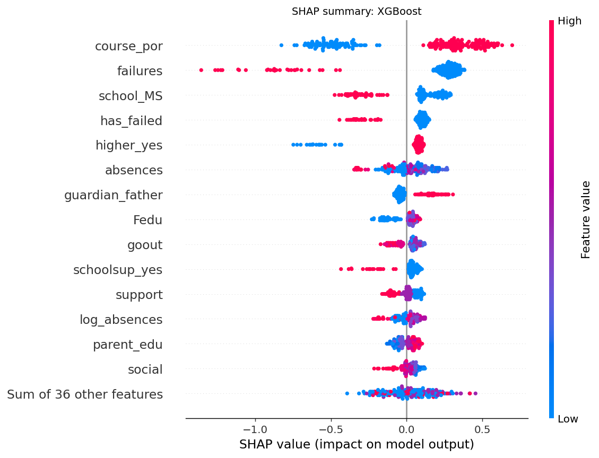
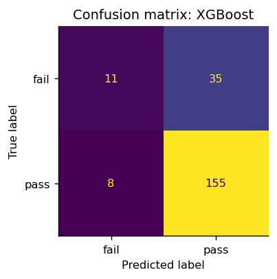
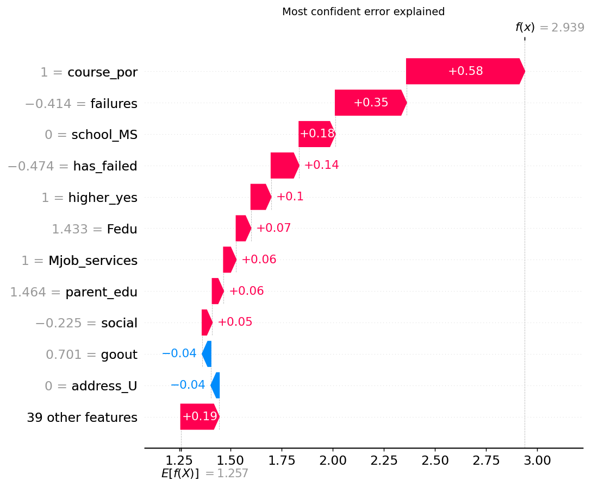

Abstract—Identifying students who will fail a course before any grade is recorded allows timely intervention. We study this early-warning task on the UCI Student Performance data (1044 students, two courses) using only demographic, social and school attributes (no period grades). An automated pipeline performs schema validation, domain feature engineering, one-hot encoding and optional PCA, then tunes six model families (logistic regression, random forest, MLP, XGBoost, LightGBM and CatBoost) with Bayesian optimisation (Optuna TPE, 40 trials each), logging every trial to MLflow. The champion, chosen on cross-validated ROC-AUC, is XGBoost (CV ROC-AUC 0.820, test ROC-AUC 0.749, F1 0.878). Under the original paper's repeated 10-fold protocol, the tuned model exceeds the best reported baseline in 5 of 6 course/setup combinations and is within 0.4 points in the remaining one, compared with Cortez and Silva. SHAP explanations identify past failures, course and higher-education intent as dominant drivers, and an error analysis shows that the default 0.5 threshold misses most failing students, motivating a recall-oriented threshold. The model is served by a validated Flask API and a Gradio interface, containerised with Docker for Hugging Face Spaces.
Index Terms—educational data mining, gradient boosting, XGBoost, Bayesian optimisation, SHAP, early warning systems.
Course failure is costly for students and institutions, and the cheapest intervention is an early one. Educational data mining [2] has shown that student outcomes can be predicted from administrative and survey data, but most published models rely heavily on in-course grades, which only exist after the problem has started. We therefore focus on the hardest and most useful setting: predicting pass/fail before any period grade is available.
The objectives are: (1) build a modular, reproducible pipeline on a public benchmark dataset [16]; (2) apply advanced ensemble learners with automated hyperparameter optimisation and experiment tracking; (3) compare rigorously against the published baseline [1] under its own protocol; (4) explain predictions and analyse errors; and (5) deploy the model as a validated real-time service in a container.
Cortez and Silva [1] introduced the dataset and compared Naive Bayes, neural networks, SVMs, decision trees and random forests on binary, 5-level and regression targets under three feature setups: A (with both period grades G1, G2), B (with G1 only) and C (no grades). They reported that accuracy depends strongly on prior grades and drops sharply in setup C, especially for Mathematics. Romero and Ventura [2] survey educational data mining and stress interpretability for educators. Since then, gradient-boosted decision trees [4] have become the state of the art on tabular data through XGBoost [5], LightGBM [6] and CatBoost [7], while random forests [3] remain a strong baseline. Model-agnostic and tree-specific SHAP values [11, 12] provide consistent local and global explanations.
Research gaps. The original study predates modern boosting, used grid-searched defaults, did not report probability-based metrics (ROC-AUC, log-loss) or calibration, and gave no per-student explanations or error analysis. It also offered no deployable system. This project addresses each of these gaps.
Fig. 1. Block diagram of the end-to-end pipeline.
The Mathematics (395) and Portuguese (649) files are merged with a course indicator (1044 rows, 34 columns). Validation found 0 missing-value or range issues and 0 duplicates. The target is pass = 1[G3 ≥ 10]; the positive rate is 78.0%, so failing students are the minority class. Six domain features are engineered: parental education sum, weighted weekly alcohol (5·Dalc + 2·Walc)/7, support count, a social index (goout + freetime − studytime), log-absences and a has-failed flag. Inside a scikit-learn [15] Pipeline, numeric columns are median-imputed and standardised, and categorical columns are one-hot encoded, giving 50 dimensions. All transforms are fitted inside each CV fold, preventing leakage. An 80/20 stratified split holds out 209 students for testing.
PCA [13] needs 29 of 50 components to retain 95% of variance (Fig. 3), showing that the information is spread across many weakly correlated attributes. A PCA+XGBoost variant is therefore evaluated as an ablation. t-SNE [14] projections (Fig. 4) show failing students concentrated in one region, but with strong overlap.
Gradient boosting fits an additive model FM(x) = Σm η fm(x) of regression trees. XGBoost minimises the regularised objective
L = Σi l(yi, ŷi) + Σm [ γTm + ½λ‖wm‖2 ]
with logistic loss l, T leaves and leaf weights w [5]. LightGBM uses histogram binning with leaf-wise growth [6], and CatBoost uses ordered boosting [7]. Baselines are L2 logistic regression, a balanced random forest [3] and an MLP.
Each model is tuned with Optuna [9] using the Tree-structured Parzen Estimator [8]: 40 trials maximising mean 5-fold stratified CV ROC-AUC on the training set. Search spaces cover depth, learning rate, number of trees, sub-sampling, column sampling and L2 regularisation. Every trial is logged as a nested MLflow [10] run with its parameters and score. The champion is selected on CV score only; the test set is never used for selection.
Experiments ran on a 12-thread Intel CPU (Windows 11) with Python 3.11, scikit-learn 1.5.1, XGBoost 2.1.1, LightGBM 4.5.0, CatBoost 1.2.7, Optuna 4.0.0 and SHAP 0.46.0, with seed 42. The code is split into data.py (loading, validation, features), models.py (model zoo and search spaces), train.py (tuning, tracking, champion), benchmark.py, analysis.py (figures, SHAP, errors) and report.py, all driven by config.yaml. Fig. 2 summarises the data, and Fig. 5 shows that the boosted models converge within about 20 TPE trials.




| Model | CV AUC | Test AUC | F1 | Acc. | Log-loss | Tune (s) |
|---|---|---|---|---|---|---|
| LogisticRegression | 0.790 | 0.723 | 0.804 | 0.703 | 0.566 | 17 |
| RandomForest | 0.816 | 0.736 | 0.869 | 0.785 | 0.480 | 125 |
| MLP | 0.766 | 0.671 | 0.846 | 0.746 | 0.600 | 49 |
| XGBoost | 0.820 | 0.749 | 0.878 | 0.794 | 0.456 | 172 |
| LightGBM | 0.818 | 0.749 | 0.884 | 0.804 | 0.456 | 171 |
| CatBoost | 0.811 | 0.754 | 0.879 | 0.794 | 0.455 | 255 |
| XGBoost+PCA | 0.768 | 0.677 | 0.881 | 0.799 | 0.630 | 219 |
All three boosting libraries outperform logistic regression on every probability metric. XGBoost has the best CV AUC (0.820) with best parameters max_depth 8, learning rate 0.024, 100 trees and subsample 0.87. Its test AUC is 0.749 against 0.723 for logistic regression, and its log-loss drops from 0.566 to 0.456. LightGBM and CatBoost are within 0.01 test AUC of the champion, a difference too small to separate on this test size. The PCA variant loses 0.071 AUC: rotating one-hot and ordinal features into dense components destroys the axis-aligned splits that trees exploit. The gap between CV and test AUC (about 0.07) reflects the small test set (n = 209).

To compare fairly with the paper, we repeat its protocol: each course separately, setups A/B/C, and accuracy from 5x10-fold stratified CV. The paper reports the mean of 20 runs of 10-fold CV, and the best model per cell is taken as the baseline.
| Course | Setup | Paper best | LogReg (ours) | XGBoost (ours) | Δ | p |
|---|---|---|---|---|---|---|
| mat | A | NV 91.9 | 92.1±4.5 | 91.5±5.0 | -0.4 | 0.57 |
| mat | B | NV 83.8 | 83.1±5.4 | 84.8±4.2 | +1.0 | 0.09 |
| mat | C | SVM 70.6 | 67.2±6.9 | 72.2±4.9 | +1.6 | 0.03 |
| por | A | DT 93.0 | 89.0±4.0 | 93.0±2.8 | +0.0 | 0.93 |
| por | B | RF 90.1 | 86.6±3.7 | 91.0±2.4 | +0.9 | 0.01 |
| por | C | RF 85.0 | 77.8±4.5 | 85.5±2.5 | +0.5 | 0.21 |
The tuned XGBoost exceeds the best reported baseline in 5 of 6 course/setup combinations and is within 0.4 points in the remaining one. The largest gain is in the hardest setting, Mathematics without grades (setup C). When grades are available (setup A), all methods reach 89–93% and the gains vanish, because G2 alone almost determines G3. The p column is a one-sample t-test of the 50 fold accuracies against the paper's mean. Fold accuracies are correlated, so these p-values are optimistic and the improvements should be read as parity or modest gains, not decisive ones. Our own logistic regression baseline falls well below the paper in setup C, which confirms that the gain comes from the tuned ensemble, not from an easier protocol.
TreeSHAP [12] values for the test set (Fig. 7) show that the course (Portuguese is easier to pass), the number of past failures, school, higher-education intent and absences dominate. The directions are educationally plausible: each past failure and higher absence pushes the prediction toward failure, while wanting higher education pushes toward pass. The Gradio app shows the top SHAP drivers for each individual prediction.

On the 209 test students the champion makes 35 missed failures (predicted pass, actually failed) and 8 false alarms (Fig. 8). Because only 22% of students fail, the 0.5 threshold favours the majority class: high F1 for "pass" hides poor recall on the class that matters. Errors concentrate on students with one past failure (error rate 45%, versus 17% with none) and in Mathematics (23% versus 19% in Portuguese). Raising the pass threshold to 0.70 reduces missed failures from 35 to 26 at the cost of 23 false alarms instead of 8. For an early-warning system, where a false alarm costs a short advising meeting, this trade-off is preferable. The waterfall plot of the most confident error (Fig. 9) shows a student with no failures and higher-education intent who still failed, a case that background data alone cannot capture.


A Flask API (/predict, /schema, /health) validates every field against its type, range and allowed categories, returns HTTP 422 with per-field messages on invalid input, and reports latency. A Gradio interface offers sliders and dropdowns plus per-student SHAP drivers. Both run in one Docker image (python:3.11-slim, non-root user, health check) that is published as a Hugging Face Space: [Hugging Face Space URL]. Source: [GitHub repository URL]. Four automated tests cover health, defaults, monotonic risk direction and validation errors.
Tuned gradient-boosted ensembles provide a reproducible early-warning model that exceeds the best reported baseline in 5 of 6 course/setup combinations and is within 0.4 points in the remaining one of the classic benchmark, with the clearest benefit where it is most needed: before any grades exist. SHAP makes the drivers transparent, and the error analysis shows that the decision threshold, not the model family, is the main lever for catching failing students. Limitations are the small size of the dataset, its origin in two Portuguese schools in 2005–2006, the optimistic fold-level significance test and the absence of a fairness audit across sex and address. Future work includes cost-sensitive threshold selection, probability calibration, fairness constraints, and adding behavioural signals (LMS activity and team contribution logs from our companion monitoring system) to improve recall on students with no failure history.